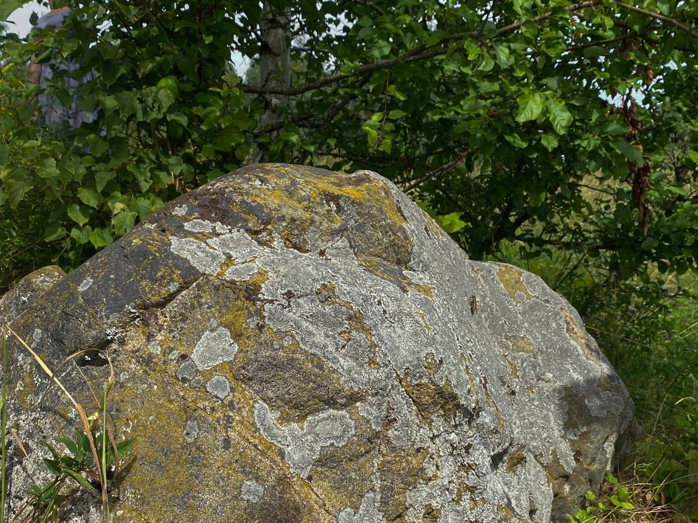
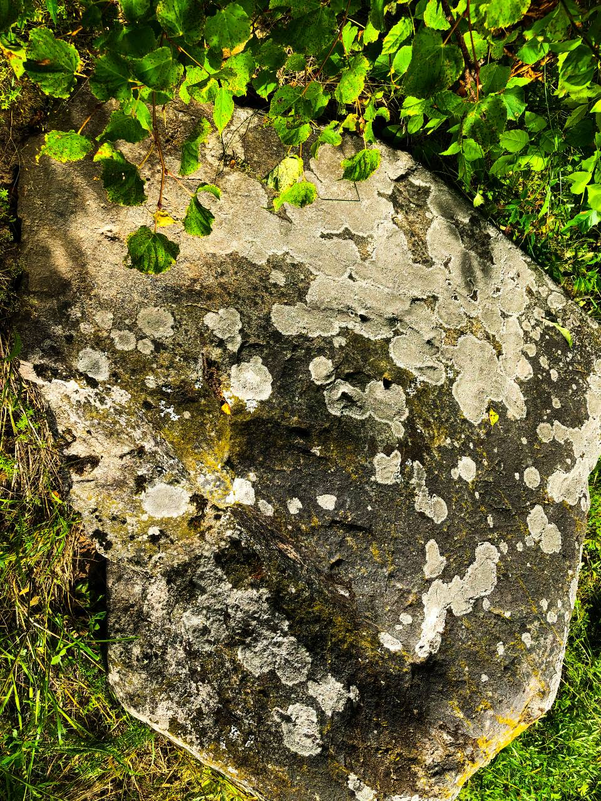
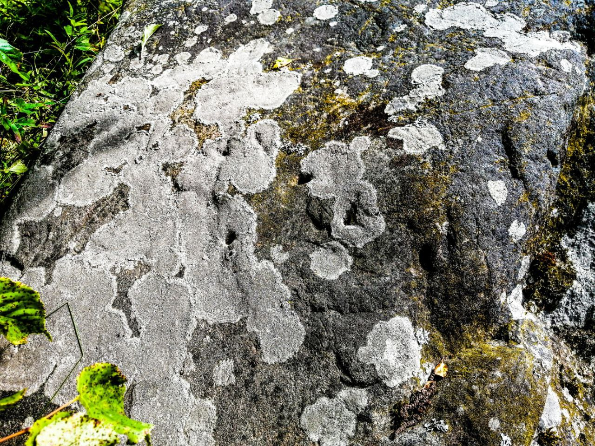

Почему люди верят, что аисты приносят детей? Секрет в истории холма Бутянок.
В деревне Гурница на Сорочанском озере у дороги находится живописный холм с огромным камнем. Это древнее капище языческого бога Ярилы. Тут встречали весну и все праздники весенне-летнего цикла: "Гуканне вясны", Купалье и т. д. Пели, водили хороводы и прыгали через костры. Парни и девушки встречали первую любовь.
В деревне Гурница на Сорочанском озере у дороги находится живописный холм с огромным камнем. Это древнее капище языческого бога Ярилы. Тут встречали весну и все праздники весенне-летнего цикла: "Гуканне вясны", Купалье и т. д. Пели, водили хороводы и прыгали через костры. Парни и девушки встречали первую любовь.
На капище лежит огромный валун, испещренный рисунками и знаками. Многие скрыты под лишайником, но некоторые видны хорошо.



По мнению местного краеведа Алеся Гарбуля, это камень использовался языческими священниками для ворожбы и предсказывания будущего. Литовский историк Витаутас Вайткявичус определил, что три углубления на нем были сделаны каким-то железным предметом. Также на этом камне есть кресты, солярные знаки и рисунки, похожие на знаки рун. По одной из версий в специальные отверстия ставились 3 палки и на них помещался сосуд, в который заливали жидкость: воду или кровь жертвенных животных. Жидкость переливалась через края сосуда и попадала на знаки. И по этим знакам языческие священники предсказывали будущее: на какие знаки попадала жидкость, такое будущее и ожидалось.
С этим холмом связаны две легенды.
С этим холмом связаны две легенды.
Когда-то очень давно в этой деревне жил чёрный знахарь. Почему черный? Дело в том, что существовали белые знахари, которые творили добро с помощью магии. Но были и чёрные, которые вредили людям.
У чёрного знахаря была молодая дочь. Она влюбилась в бедного юношу-сироту. Знахарю не понравилось, что мужем его прекрасной дочери может стать какой-то нищий.
Узнав об их встрече, он подсыпал в напиток дочери сонного зелья. Когда девушка уснула, отец сам пришёл на холм и встретился с ее возлюбленным. И его тоже угостил квасом с сонным зельем. Он рассказал парню, что его дочь уснула на пару минут и попросила подождать её, а он принёс ему попить.
Парень выпил напиток и уснул. А зима была тогда холодная. На следующий день юношу нашли там же на холме, замерзшим насмерть. Там же его и похоронили.
А возлюбленная его проснулась только через три дня. И когда узнала о трагедии, люди говорят, целых 40 дней лила слезы на могиле возлюбленного. А на 41 день там случилось чудо: из-за слез девушки на том холме среди снега расцвела трава и первоцветы. И на могиле парня стоял аист, держа в своём клюве младенца. Девушка пропала. Люди усыновили ребёнка, а холм назвали Бутянок, ведь в древние времена аиста на белорусском также называли "бутян".


Тень князя
Вторая легенда рассказывает о том, что посреди Сорочанского озера раньше был остров, на острове в замке жил князь. Его дочь полюбила простого рыцаря. Отец об этом не знал, а когда вернулся из дальнего похода, ему народ сообщил о романе. Князь дал указ схватить солдата и побить палками, засечь до смерти.
Дочь не дала этому случиться. Тогда отец приказал связать и закопать влюбленную пару живьем. После преступления князь выгнал челядь из замка и заперся там на 3 дня. Внезапно люди увидели, что замок загорелся. И от клубов дыма отделилась огромная тень переплыла озеро и исчезла. По легенде это была тень князя. А зная о его преступлении, никто даже не бросился тушить пожар.
Говорят, что до сих пор привидение князя ходит в полнолуние вокруг озера и разыскивает влюблённых. Твердят, что с теми, кто видит привидение, происходят несчастные случаи.
Так что, если вы захотите посетить это место не появляйтесь здесь в полнолуние!


Легенды записали Роман Неведомский и Алекс Працкевіч.